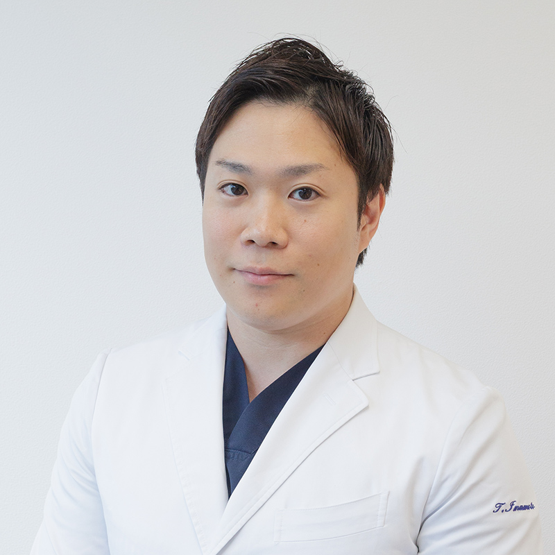
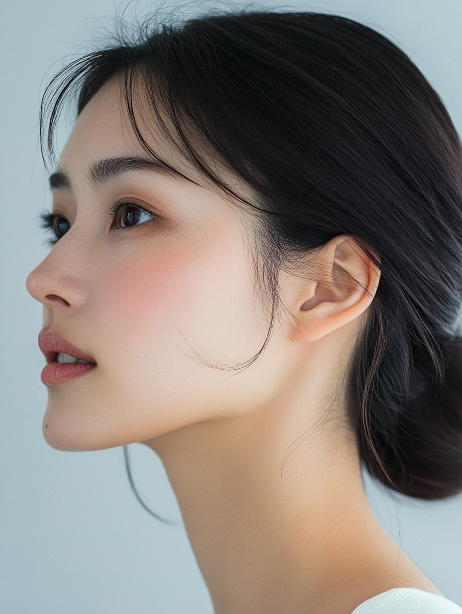
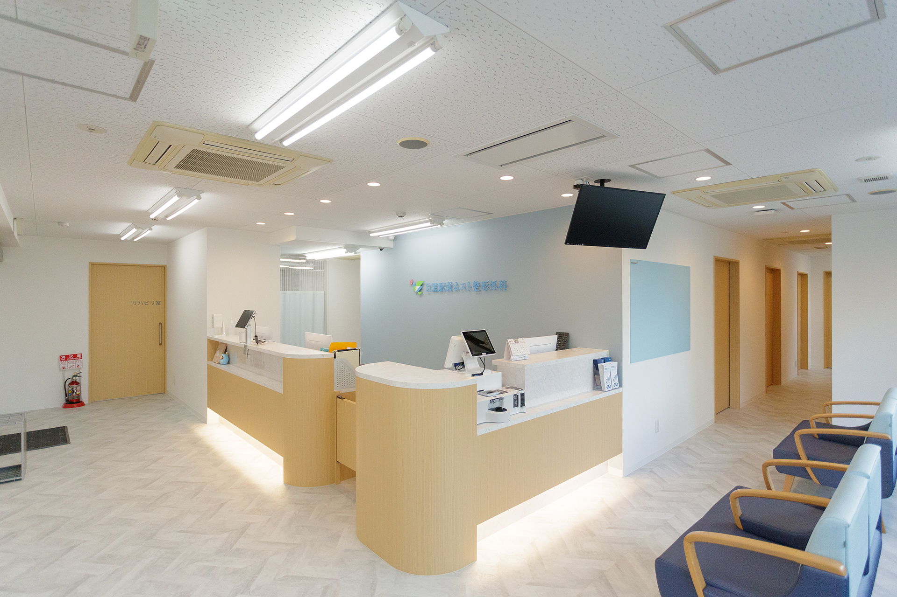

目黒駅 東口から徒歩2分・19時まで・祝日も診療。
医師が行う、表情ジワ・エラの注入治療。
これらは、表情を動かす筋肉のクセや張りが関係していることがあります。注入治療で筋肉の動きをやわらげることで、自然な印象の改善を目指せます。
注入治療は、注入量・部位・筋肉の動きの見極めが仕上がりを大きく左右します。当院では医師が一人ひとりの表情を確認し、自然さを損なわないよう調整します。
1階のファミリーマートが目印。仕事帰りや予定の前にも通いやすい立地と診療時間です。施術は短時間で済みます。
効きの過不足は個人差があります。当院では施術後の状態を確認し、必要に応じて追加対応します。

「自然な表情を残すことを第一に、量と部位を見極めます。」
院長・今本多計臣
眉を上げる・ひそめる動作の繰り返しで刻まれる表情ジワに。筋肉の動きを一時的に抑えることで、シワの形成を抑え、穏やかでやわらかい印象を目指します。

噛む筋肉（咬筋）の張りが顔の輪郭を角ばって見せることがあります。筋肉の働きをやわらげ、フェイスラインをすっきりとした印象へ。歯ぎしり・食いしばりの負担軽減も期待できます。
口角を引き下げる筋肉の緊張をやわらげ、下がった口角を自然に引き上げ。笑うと歯ぐきが見えやすい口元の調整にも対応します。
こりや張りが気になる方へ。筋肉の緊張をやわらげるアプローチに対応しています。
効果は注入後3〜7日ほどで現れ、1〜2週間でピークを迎え、おおむね3〜4か月持続します（個人差があります）。定期的に受けることで、表情の印象を整えやすくなります。
全メニュー・税込
| 部位 | 通常 | 初回 |
|---|---|---|
| 額・眉間・目尻・口元・小じわ 各1部位 人気 | 9,500円 | 5,000円 |
| エラ（通常量） | 16,000円 | ― |
| エラ（倍量） | 30,000円 | ― |
| 肩こり（肩の筋肉） | 36,000円 | ― |
| ふくらはぎ（両側） | 40,000円 | ― |
※初回特別キャンペーン（1部位 5,000円）は、当院で注入治療が初めての方・お一人様1回・1部位のみ適用。
※すべて自由診療（保険適用外）です。
短時間・ダウンタイムはほとんどありません。
約2週間後に状態を確認し、必要に応じて微調整します。
必ずお読みください
本治療では、筋肉の動きを抑える注射用製剤を使用します。本剤は美容目的の使用について、日本国内で医薬品医療機器等法上の承認を得ていない未承認医薬品であり、国内の販売代理店経由で入手しています。同一の有効成分・効能を持つ国内承認医薬品が存在します。使用製剤の詳細、および重大な副作用が報告されている同種・同効の医薬品に関する情報については、診察時に医師がご説明します。
本治療は自由診療であり、公的医療保険は適用されません。料金は上記の料金一覧のとおりです。
